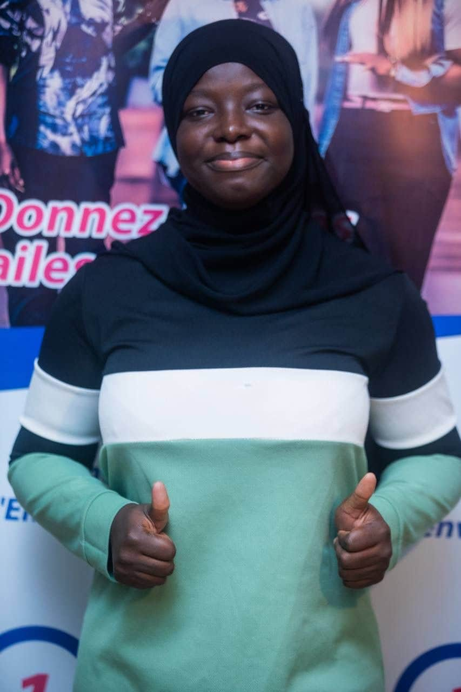

Étudiante en sciences économiques et de gestion, passionnée par la lecture, l’écriture et l’informatique.
Je suis Fatimate El Kawsar Bandé, j’ai 20 ans. Je suis passionnée par la lecture et tout ce qui s’y rapporte. J’aime également les chiffres et les mathématiques, ce qui m’a orientée vers une formation scientifique.
Après l’obtention de mon Baccalauréat série D, je me suis orientée vers les sciences économiques et de gestion. Durant mes trois années de licence, j’ai développé une grande curiosité pour le domaine de l’informatique, notamment le montage vidéo, l’infographie et le développement d’applications. Cette curiosité m’a conduite aujourd’hui à postuler au programme Développeur Data et Intelligence Artificielle de Simplon.
Je suis passionnée par les mots : la lecture, l’écriture, l’art de parler, et particulièrement le slam. Je crois profondément en la puissance des mots. Parce que les mots apaisent, parce que les mots peuvent changer le monde, et parce que la parole est une arme — parfois la seule arme des plus faibles.
Je suis également passionnée par l’infographie. Un beau visuel, une affiche simple mais pleine d’âme, l’harmonie des couleurs et le choix de la typographie m’émerveillent.
Enfin, le montage vidéo et le développement d’applications m’attirent par curiosité. Je suis fascinée par la puissance des algorithmes, l’automatisation et l’évolution de l’IA. Je veux comprendre comment on part d’un point A pour aboutir à ce merveilleux résultat qu'est le point B.
linkedin: Voir mon profil